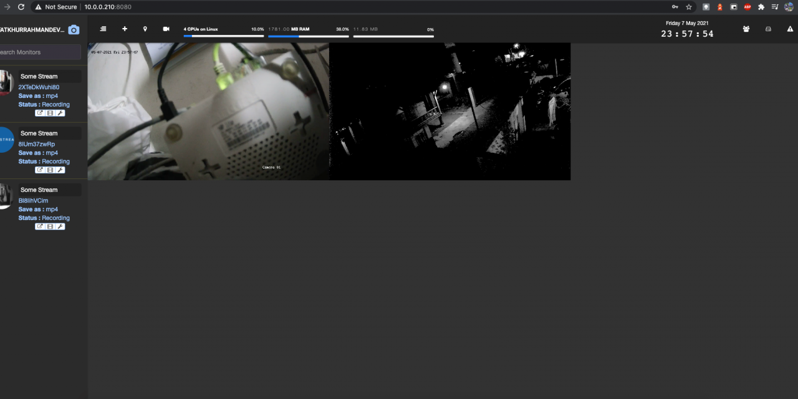

INSTALL SHINOBI – NVR CCTV DI ARMBIAN
Shinobi software Open Source, ditulis dalam Node.js, dan sangat mudah digunakan. Shinobi ini cocok untuk pengembang dan pengguna akhir.
Shinobi software Open Source, ditulis dalam Node.js, dan sangat mudah digunakan. Shinobi ini cocok untuk pengembang dan pengguna akhir.
Node.js adalah platform perangkat lunak pada sisi server dan aplikasi jaringan. Ditulis dengan bahasa JavaScript dan dijalankan pada Windows, Mac OS X, dan Linux tanpa perubahan kode program.
Shell In A Box mengimplementasikan server web yang dapat mengekspor alat baris perintah arbitrer ke emulator terminal berbasis web. Emulator ini dapat diakses oleh semua browser web yang mendukung JavaScript dan CSS dan tidak memerlukan plugin browser tambahan apa pun.
Eclipse adalah sebuah IDE untuk mengembangkan perangkat lunak dan dapat dijalankan di semua platform. Berikut ini adalah sifat dari Eclipse: Multi-platform: Target sistem operasi Eclipse adalah Microsoft Windows, Linux, Solaris, AIX, HP-UX dan Mac OS X.